방송통신기사 (2013-03-17 기출문제)
1과목: 디지털 전자회로
1. 수정발진기는 임피던스가 어떤 조건일 때 가장 안정된 발진을 하는가?
- 저항성
- 용량성
- 유도성
- 유도성과 용량성 결합
(정답률: 57%)

2. 다음 중 증폭기에 대한 설명으로 알맞은 것은?
- 교류(AC)를 직류(DC)로 바꾸는 여러 과정 가운데 맥류를 완전한 직류로 바꾸어 준다.
- 입력의 신호변화가 출력단에 확대되어 나타난다.
- 교류성분을 직류성분으로 변환하기 위한 전기회로이다.
- 다이오드를 사용하여 교류 전압원의 (+) 또는 (-)의 반 사이클을 정류하고, 부하에 직류 전압을 흘리도록 한다.
(정답률: 76%)
3. 다음 중 특정 비트의 값을 무조건 0으로 바꾸는 연산은?
- XOR 연산
- 선택적-세트(selective-set) 연산
- 선택적-보수(selective-complement) 연산
- 마스크(mask) 연산
(정답률: 72%)
4. 다음 회로에서 제너다이오드의 특성으로 옳은 것은? (단, Vs는 제너다이오드의 동작을 위한 정격전압보다 크다.)
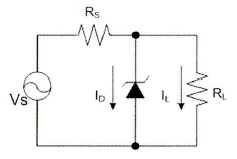
- 일정한 신호를 증폭시킨다.
- 사용하기 적당한 교류전압으로 변환한다.
- 리플 성분을 제거시킨다.
- 일정한 직류 출력전압을 제공한다.
(정답률: 58%)
5. 전파 중간탭 정류기를 이용한 전파정류회로에서 맥동률에 대한 설명으로 옳지 않은 것은?
- 주파수에 비례한다.
- 부하저항에 반비례한다.
- 콘덴서 C의 정전용량에 반비례한다.
- 부하저항과 정전용량의 곱에 반비례한다.
(정답률: 44%)
6. 그림과 같은 논리 회로는?
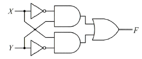
- XOR
- XNOR
- AND
- OR
(정답률: 64%)
7. 다음의 진리표에 해당하는 논리회로도는?
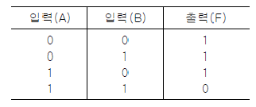
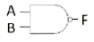
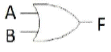
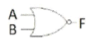
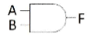
(정답률: 69%)
8. 다음 중 틀린 것은?
- A+B = B+A
- AㆍB = BㆍA
- A+0 = 0
- Aㆍ1 = A
(정답률: 72%)
9. 간접 FM 변조방식(Armstrong 방식)에서의 필수 요소가 아닌 것은?
- 가산기(adder)
- 평형 변조기(balanced modulation)
- 위상천이기(90° phase shifter)
- 진폭제한기(limiter)
(정답률: 57%)
10. 일정시간 동안 200개의 비트가 전송되고, 전송된 비트 중 15개의 비트에 오류가 발생하면 비트 에러율(BER)은?
- 7.5[%]
- 15[%]
- 30[%]
- 40.5[%]
(정답률: 77%)
11. 이상적인 A급 증폭기의 최대효율은?
- 18[%]
- 35[%]
- 50[%]
- 100[%]
(정답률: 62%)
12. 아래의 괄호 안에 들어갈 알맞은 답을 앞에서부터 순서에 맞게 나열한 것은?
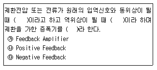
- ㉮ ㉯ ㉰
- ㉯ ㉰ ㉮
- ㉰ ㉮ ㉯
- ㉰ ㉯ ㉮
(정답률: 74%)
13. 다음 그림은 수정진동자의 등가회로를 나타내었다. 수정진동자의 직렬공진주파수는?
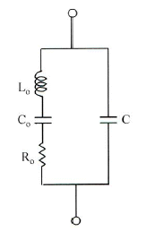
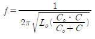
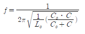
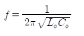
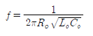
(정답률: 67%)
14. JK Flip-Flop에서 현재 상태의 출력 Qn을 1로 하고, J입력과 K입력이 1일 때 클럭펄스 CP에 신호가 인가되면 다음 상태의 출력 Qn+1은? (단, 플립플롭의 setup time과 holding time은 만족한다고 가정함)
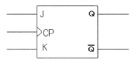
- 부정
- 1
- 0
- Qn
(정답률: 54%)
15. 다음 중 병렬 클리핑 회로에서 클리핑 특성을 좋게 하기 위하여 사용되는 저항 R의 조건으로 옳은 것은? (단, Rd는 다이오드의 순방향 저항이다.)
- R = Rd
- R = 1/Rd
- R < Rd
- R ≫ Rd
(정답률: 63%)
16. 다음 그림의 회로 명칭은?
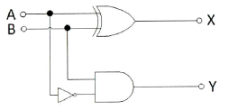
- 가산기
- 감산기
- 반감산기
- 비교기
(정답률: 59%)
17. 10진 BCD 코드를 LED 출력으로 표시하려면 어떤 디코더 드라이브가 필요한가?
- BCD-10세그먼트
- Octal-10세그먼트
- BCD-7세그먼트
- Octal-7세그먼트
(정답률: 71%)
18. 다음 중 슬라이서 회로에 대한 설명으로 옳은 것은?
- 입력전압이 어느 기준 레벨 이하일 때 출력을 증강시키는 회로
- 입력이 어느 레벨 이상이 될 때 깎아내어 레벨을 낮추는 회로
- 입력 파형을 일정 레벨로 고정시키는 회로
- 서로 반대 방향으로 바이어스된 클리퍼를 연속 연결한 회로
(정답률: 46%)
19. 다음 그림과 같은 회로의 입력에 계단 전압(step voltage)를 인가할 때 출력에는 어떤 파형의 전압이 나타나겠는가? (단, A는 이상적인 연산증폭기이다.)
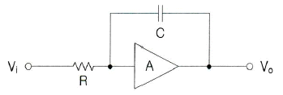
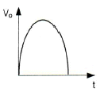
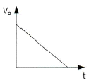
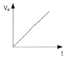
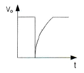
(정답률: 74%)
20. 무부하시의 직류 출력 전압이 300[V]이고, 전부하시 직류 출력 전압이 250[V]였다면 전압 변동률은?
- 10[%]
- 20[%]
- 30[%]
- 40[%]
(정답률: 55%)
2과목: 방송통신 기기
21. 다음 중 방송영상에서 색의 3요소가 아닌 것은?
- 휘도
- 혼합도
- 명도
- 포화도
(정답률: 77%)
22. 접시안테나를 통해 모인 초고주파 신호를 중간주파수(1[GHz])대의 신호로 변환하는 장치는?
- LNB
- Set-top box
- 접시형 안테나
- BPF
(정답률: 92%)
23. 다음 중 NTSC TV 방식에서 음성신호의 변조방식은?
- AM 방식
- FM 방식
- PM 방식
- TM 방식
(정답률: 83%)
24. 다음 중 휘도신호의 차에 따라서 키(key)를 뽑는 것은 무엇인가?
- 크로마키(chroma key)
- 매트키(matte key)
- 리니어키(linear key)
- 루미넌스키(luminance key)
(정답률: 82%)
25. 다음 중 방송통신에 있어서 변조의 목적과 가장 거리가 먼 것은?
- 전자파의 송수신에 필요한 안테나의 크기를 줄이기 위해서이다.
- 하나의 통신로에 여러 신호를 동시에 전송할 수 있게 하기 위해 사용한다.
- 파장이 짧은 고주파 신호로 변조하게 되면 사용하는 부품이 소형화되어 장비가 소형화되고 경량화되는 장점이 있다.
- 송신기와 수신기의 구조를 간단히 하기 위해서이다.
(정답률: 73%)
26. 방송신호 측정시 송신기 입력전압이 0.5[V]일 때 출력전압이 50[V]였다면 송신기의 전압이득은 [dB]인가?
- 10[dB]
- 20[dB]
- 30[dB]
- 40[dB]
(정답률: 77%)
27. 다음 중 디지털 멀티미디어 방송(DMB : Digital Multimedia Broadcasting)에 대한 설명 중 바르지 못한 것은?
- DMB의 멀티미디어 서비스를 수신하는 형태로 휴대형 수신과 이동형 수신이 있다.
- DMB가 각광을 받게 된 것은 우리나라에서 실시하고 있는 디지털 TV가 이동수신에 강점을 지니고 있기 때문이다.
- 원래 DAB(Digital Audio Broadcasting)로 시작하다가 멀티미디어 방송개념이 추가되면서 DMB라는 용어가 나타났다.
- DMB는 이동수신이 가능하여 TV의 공간적 확대효과를 꾀할 수 있다.
(정답률: 80%)
28. 다음 중 컬러바(color bar)에 대해 정밀하고 반복된 신호를 만들어서 시험과 조정 절차를 위해 사용되는 것은?
- TV 패턴신호 발생기
- 웨이브폼 모니터
- 벡터스코프
- 스펙트럼 아날라이저
(정답률: 87%)
29. 위성 DMB 시스템의 CDM 변조부까지의 전송 매커니즘의 순서로 알맞은 것은?
- 비디오/오디오 → MPEG2 TS → 리도솔로몬 부호기 → 바이트 인터리버 → 길쌈 부호화기 → 비트 인터리버 → CDM 변조기
- 비디오/오디오 → 바이트 인터리버 → MPEG2 TS → 리도솔로몬 부호기 → 비트 인터리버 → 길부호화기 → CDM 변조기
- 비디오/오디오 → MPEG2 TS → 리도솔로몬 부호기 → 비트 인터리버 → 길쌈 부호화기 → 바이트 인터리버 → CDM 변조기
- 비디오/오디오 → MPEG2 TS → 길쌈 부호기→ 바이트 인터리버 → 리도솔로몬 부호기 → 비트 인터리버 → CDM 변조기
(정답률: 73%)
30. 인물화상을 다른 화상에 끼워 넣는 화면 합성을 위한 것으로 특정한 색을 선택하여 키 신호를 만드는 것은?
- 크로마키
- 이펙트키
- 출력키
- 새도우키
(정답률: 94%)
31. 우리나라 지상파 디지털 멀티미디어 방송(T-DMB)의 송신 블럭의 주파수 대역은?
- 약 200[kHz]
- 약 1[MHz]
- 약 1.5[MHz]
- 약 6[MHz]
(정답률: 71%)
32. 여러 개의 입력 마이크나 녹음기, 턴테이블, 라인입력, 음악효과 등을 혼합처리해서 VTR 또는 Tape recorder에 녹음하거나 앰프를 통해 스피커로 보내는 것은?
- 콘솔(음향혼합)
- 녹화기
- 프리앰프
- 영상혼합기
(정답률: 91%)
33. 다음 중 주파수 변조방식을 사용하는 FM라디오의 특성이 아닌 것은?
- 주 반송파의 최대주파수 편이는 ±75[kHz]이다.
- 파일럿 신호의 주파수는 19[kHz]이다.
- 압축표준으로 MPEG-2를 사용한다.
- 88[MHz]~108[MHz]를 사용한다.
(정답률: 66%)
34. 위성통신에서 사용되는 다중 접속 방식 중 지구국이 증가해도 회선 효율이 양호하고 통화회선마 고유코드를 할당하여 전송함으로써 지구국 상호간에 혼신 없이 통신이 가능한 방식은?
- SDMA(Space Division Multiple Access)
- FDMA(Frequency Division Multiple Access)
- TDMA(Time Division Multiple Access)
- CDMA(Code Division Multiple Access)
(정답률: 89%)
35. 인터넷방송을 위한 전역적 작업 분배(global load balancing) 방식의 설명으로 맞지 않는 것은?
- 서버를 동일한 지역에 위치하는 대신에 지역적으로 분산시켜 서로 다른 지역에 서버를 위치하는 분배 방식이다.
- 대표적 방식으로 콘텐츠 전송 네트워크가 있다.
- 어느 특정한 지역의 서비스 불능이 전체 서비스에 영향을 미치는 단점이 있다.
- 사용자의 위치를 고려하여 분배할 수 있어 빠른 시간에 데이터를 전송할 수 있다.
(정답률: 82%)
36. 텔레비전을 인터넷망에 연결하여 영상 및 다양한 양방향 멀티미디어를 제공하는 방송통신 융합서비스를 무엇이라 하는가?
- HSDPA
- DMB
- IPTV
- DVB-H
(정답률: 88%)
37. 다음 중 카메라의 위치를 움직이지 않고 카메라 헤드만을 수평방향으로 회전시키면서 촬영하는 것은?
- 패닝(Panning)
- 틸팅(Tilting)
- 달리(Dolly)
- 붐(Boom)
(정답률: 86%)
38. 다음 중 8VSB 신호분석기에서 측정할 수 없는 항목은?
- EVM
- MER
- SNR
- VBR
(정답률: 60%)
39. CATV 전송선로의 종류로 종합유선방송국에서부터 분배센터까지 광케이블로 구성된 선로를 무엇이라 하는가?
- 초간선
- 간선
- 분배선
- 인입선
(정답률: 80%)
40. 케이블 방송 채널 4번의 경우 채널의 폭이 66[MHz]~72[MHz]라 할 때 영상 반송파와 음성 반송파의 주파수를 바르게 나타낸 것은?
- 67.25[MHz], 71.75[MHz]
- 66[MHz], 67.25[MHz]
- 72[MHz], 66[MHz]
- 67.25[MHz], 72[MHz]
(정답률: 94%)
3과목: 방송미디어 공학
41. 현재 한국에서 방송중인 방식에서 다중경로에 대한 강인성이 가장 우수한 방송방식은 무엇인가?
- FM 방송
- AM 방송
- NTSC 방송
- DMB 방송
(정답률: 71%)
42. 다음 중 디지털 방송 시스템의 특성이 아닌 것은?
- 네트워크 기반의 통합 제작 시스템
- 효율적 자료관리 시스템
- 방송자동화 시스템의 증가
- 선형 편집 시스템
(정답률: 90%)
43. 다음 중 특정 부분의 빛을 없애는데 사용되는 불투명 가림막을 의미하며 램프(lamp) 앞에 위치하여 의도하지 않은 광선이 투사되는 것을 차단하거나 특정 모양을 만들어 투사하는 역할을 하는 것은?
- 필터(filter)
- 고보(gobo)
- 프로젝터(projector)
- 게이트(gate)
(정답률: 78%)
44. 인터넷 멀티미디어 내용물을 실시간으로 주고받을 수 있도록 해주는 기능을 무엇이라 하는가?
- Streaming
- FTP
- Download
- Uplink
(정답률: 82%)
45. 진동체에 의하여 진동된 1초간 진동수의 대소로 표현되는 소리의 요소로 가장 적절한 것은?
- 음색
- 음조
- 강약
- 음량
(정답률: 84%)
46. 다음 중 뉴미디어의 특징에 속하지 않는 것은?
- 동시성을 띤다.
- 개인커뮤니케이션이 확대된다.
- 탈 대중화와 쌍방향성을 띤다.
- 비동시성을 띤다.
(정답률: 61%)
47. 디지털 신호 처리에서 원신호와 샘플링 주파수와의 관계로 가장 적절한 것은? (단, fs: 샘플링주파수, fmax: 원신호의 최대주파수)
- fs = fmax
- fs ≥ 2fmax
- fs < 2fmax
- fs = 3fmax
(정답률: 89%)
48. 다음 중 HD급 디지털 TV의 휘도신호 표본화 주파수는?
- 13.5[MHz]
- 6.75[MHz]
- 74.25[MHz]
- 148.5[MHz]
(정답률: 67%)
49. 사람이 들을 수 있는 가장 작은 소리로서 최소 가청값은 몇 [dB]인가?
- 0[dB]
- 3[dB]
- 10[dB]
- 100[dB]
(정답률: 80%)
50. 아날로그 신호를 디지털 형태의 PCM 신호로 변화시키기 위해서는 세 가지 기본 과정이 필요하다. PCM 과정으로 옳은 것은?
- 표본화(sampling) 과정 → 양자화(quantization) 과정 → 부호화(coding) 과정
- 부호화(coding) 과정 → 표본화(sampling) 과정 → 양자화(quantization) 과정
- 표본화(sampling) 과정 → 부호화(coding) 과정 → 양자화(quantization) 과정
- 양자화(quantization) 과정 → 표본화(sampling) 과정 → 부호화(coding) 과정
(정답률: 91%)
51. 지상파 ATSC 방식에서 프로그램 안내정보와 채널의 전송정보를 포함하고 있는 테이블은 어디에 포함되어 있는가?
- SI(System Information)
- SAS(System Authorization System)
- EMM(Entitlement Management Message)
- PSIP(Program And System Information Protocol)
(정답률: 80%)
52. 다음 저장 미디어 중 저장 매체의 형태가 다른 하나는?
- CD-R
- DVD
- Blu-ray
- DAT
(정답률: 89%)
53. 다음 방송 분류 중 분류 기준이 다른 하나는 무엇인가?
- 단파방송
- 중파방송
- 초단파방송
- 위성방송
(정답률: 87%)
54. 다음 중 기본적인 디지털 신호처리의 순서로 맞는 것은?
- 아날로그 입력 → Anti-Aliasing Filter → A/D 변환 → 디지털 신호처리 → D/A 변환 → Smoothing Filter → 아날로그 출력
- 아날로그 입력 → A/D 변환 → Anti-Aliasing Filter → 디지털 신호처리 → D/A 변환 → Smoothing Filter → 아날로그 출력
- 아날로그 입력 → Smoothing Filter → A/D 변환 → 디지털 신호처리 → D/A 변환 → Anti-Aliasing Filter → 아날로그 출력
- 아날로그 입력 → Anti-Aliasing Filter → A/D 변환 → 디지털 신호처리 → Smoothing Filter → D/A 변환 → 아날로그 출력
(정답률: 81%)
55. 다음 중 인간의 눈에 의해 지각되는 빛의 단위시간당 에너지인 광속(luminous flux)의 단위는?
- 루멘(lumen)
- 칸델라(candela)
- 룩스(lux)
- 니cm(nits)
(정답률: 75%)
56. 비디오 매체의 사회적 이용으로 인한 특성을 잘못 제시한 것은?
- 참여하는 미디어
- 전문 엘리트의 미디어
- 민주적 미디어
- 감시하는 미디어
(정답률: 77%)
57. 화면 전환 효과에서 하나의 이미지가 다음 이미지로 전환될 때 이중으로 노출되어 이미지가 혼합되며 전환되는 것을 무엇이라 하는가?
- 커트(cut)
- 디졸브(dissolve)
- 와이프(wipe)
- 페이드(fade)
(정답률: 88%)
58. 다음의 디지털 TV 서비스 중 일정시간 간격으로 제공되는 콘텐츠를 편당 요금 지불 방식으로 시청하는 서비스는 무엇인가?
- Near-VOD
- Real-VOD
- TVOD
- EPG
(정답률: 91%)
59. 다음 중 카메라 렌즈에 형성되는 피사체의 상이 뚜렷하게 보일 수 있는 가장 가까운 거리와 가장 먼 거리 사이의 범위를 지칭하는 것은?
- F값
- 피사계 심도
- 초점
- 조도
(정답률: 76%)
60. 국내 위성 디지털 멀티미디어 방송에서 사용되는 오디오 압축방식은 무엇인가?
- MPEG-1
- MPEG-2
- MPEG-7
- MPEG-4
(정답률: 76%)
4과목: 방송통신 시스템
61. 다음 중 CATV 방송국에서 가입자까지의 전송로를 옳게 구성한 것은?
- 초간선 → 간선 → 분배선 → 인입선
- 간선 → 초간선 → 분배선 → 인입선
- 인입선 → 초간선 → 간선 → 분배선
- 인입선 → 간선 → 초간선 → 분배선
(정답률: 78%)
62. NTSC TV 방송채널의 주파수 대역폭은 얼마인가?
- 4[MHz]
- 4.5[MHz]
- 6[MHz]
- 6.5[MHz]
(정답률: 83%)
63. 다음 중 방송통신망의 종류가 아닌 것은?
- 무선전송방식
- 유선전송방식
- 위성전송방식
- 수중전송방식
(정답률: 85%)
64. 지상파 DMB와 비교하여 위성 DMB에 해당되는 것은?
- 국지적인 서비스이다.
- 서비스 채널이 적다.
- CDM 방식을 적용한다.
- 갭필러를 사용하지 않는다.
(정답률: 73%)
65. 우리나라에서 거의 활용되지 않는 방송은?
- 장파 방송
- 중파 방송
- 단파 방송
- 초단파 방송
(정답률: 72%)
66. 우리나라 위성 DMB 시스템(시스템E)의 신호 다중화 방식으로 옳은 것은?
- ADM
- CDM
- OFDM
- FDM
(정답률: 59%)
67. 다음은 유성방송국설비 등에 관한 기술기준에 대한 설명이다. “( )라 함은 유선방송국에서 텔레비 방송신호를 수신하기 위한 수신안테나, 케이블 및 증폭장치 등을 말한다.” ( )에 알맞은 내용은?
- 선로설비
- 방송설비
- 수신설비
- 무선설비
(정답률: 78%)
68. 다음 중 디지털 변조방식으로 옳지 않은 것은?
- ASK
- PSK
- AM
- FSK
(정답률: 85%)
69. 다음 중 CATV 방송시스템의 수신점 설비에 대한 장치가 아닌 것은?
- FM, VHF, UHF 수신안테나
- 위성방송 수신장치
- AM 변조기
- U/V 컨버터
(정답률: 42%)
70. FM 수신기 보조회로가 아닌 것은?
- 진폭제한기
- 디엠퍼시스 회로
- 스켈치 회로
- IDC 회로
(정답률: 74%)
71. 다음 중 FM 방송에서 송신기의 최대 주파수 편이로 옳은 것은?
- 25[Hz]
- 50[kHz]
- 75[kHz]
- 100[kHz]
(정답률: 84%)
72. 다음 중 위성방송을 지상에서 수신시 단위 면적을 통과하는 전자파의 전력선 밀도 P는 약 얼마인가? (단, 전계세기 E는 197[V/m]이다.)
- 197[dBW/m2]
- 153[dBW/m2]
- 136[dBW/m2]
- 103[dBW/m2]
(정답률: 82%)
73. 다음 위성통신 방식 중 하나로 반송파를 여러 통신자가 시간간격으로 분할하여, 할당된 시간이 겹치지 않도록 통신하는 방식은?
- CDMA
- FDMA
- WDMA
- TDMA
(정답률: 82%)
74. CATV망에서 동축케이블은 온도 변화에 따라 감쇠량이 증가한다. 다음 중 이러한 변동을 자동으로 보상해 주는 것은?
- ATT
- EQ
- BON
- AGC
(정답률: 82%)
75. 유선방송시설을 구성하는 기본적인 망 구성으로다수의 가입자에게 동일한 신호를 보낼 경우 극히 효율적인 망의 이름은?
- 성형망(Star network)
- 망형망(mesh network)
- 복합망(hybrid network)
- 수지형망(tree and branch network)
(정답률: 75%)
76. 다음 중 주파수 변조방식의 특징으로 옳은 것은?
- 레벨변동의 영향을 받는다.
- 좁은 주파수 대역이 필요하다.
- 전송로의 주파수 변동에 강하다.
- 진폭변조방식에 비해 S/N비가 개선된다.
(정답률: 68%)
77. 디지털 HDTV 방송시스템의 채널부호화 및 변조를 수행하는 것은?
- Source Coding
- Compression
- RF Transmission
- Demodulation
(정답률: 78%)
78. 다음 중 통신위성의 개발, 발사, 운용 및 관리 등을 수행하는 국제적인 위성통신기구는?
- INSAT
- INTELSAT
- WESTER
- ISO
(정답률: 85%)
79. 44.1[kHz]로 샘플링한 CD의 경우 이론적으로 재생할 수 있는 최대 주파수는?
- 10.⑤[kHz]
- 16.25[kHz]
- 22.⑤[kHz]
- 25.25[kHz]
(정답률: 76%)
80. 다음 중 TV 방송 송신에서 영상 반송파와 음성 반송파가 서로 간섭되지 않도록 합성하는 장치로 옳은 것은?
- 영상 IF
- 공동 공진기
- CIN 다이플렉서
- 유도결합기
(정답률: 78%)
5과목: 전자계산기 일반 및 방송설비기준
81. 다음 중 방송국 개설허가시 심사사항이 아닌 것은?
- 당해 법인의 설립이 확실한지의 여부
- 방송국을 운용할 수 있는 기술적 능력의 보유여부
- 방송국의 시설설치계획이 합리적인지의 여부
- 중파방송을 하는 방송국인 때에는 공중선전력이 100킬로와트 이상인지
(정답률: 75%)
82. TV 수신료의 금액은 한국방송공사 이사회가 심의ㆍ의결한 후 방송통신 위원회를 거쳐 누구의 승인을 얻어 확정되는가?
- 행정안전부장관
- 대통령
- 국회
- 문화체육관광부장관
(정답률: 75%)
83. 다음 중 분산처리 시스템에 대한 설명으로 틀린 것은?
- 사용자들이 여러 지역의 자원과 정보를 마치 자신의 시스템 내부 자원처럼 편리하게 사용한다.
- 지역적으로 분산된 여러 대의 컴퓨터가 프로세서 사이의 특별한 데이터 링크를 통하여 교신하면서 동일한 업무를 수행한다.
- 접속된 모든 단말 장치에 CPU의 사용시간(Time Slice)을 일정한 간격으로 차례로 할당한다.
- 자원의 공유, 신뢰성 향상, 계산속도 증가 등의 특징을 가진다.
(정답률: 81%)
84. 다음 중 인터럽트 우선순위가 바르게 나열된 것은?
- 정전 인터럽트 > I/O 인터럽트 > 외부 인터럽트
- 외부 인터럽트 > I/O 인터럽트 > 기계고장 인터럽트
- 정전 인터럽트 > 기계고장 인터럽트 > 외부 인터럽트
- 정전 인터럽트 > 외부 인터럽트 > 기계고장 인터럽트
(정답률: 65%)
85. 감리제외 대상인 공사의 범위에 해당되지 않는 것은?
- 안전, 재해예방 및 운용ㆍ관리를 위한 공사로서 총 공사 금액이 1억 이상인 공사
- 전기통신사업법에 의한 전기통신사업자가 전기통신 역무를 제공하기 위한 공사로서 총 공사 금액이 1억원 미만인 경우
- 6층 미만이거나 연면적 5천제곱미터 미만인 건축물에 설치되는 정보통신설비의 설치공사
- 기타 공중의 통신에 영향을 미치는 아니하는 정보통신 설비의 설치공사로서 방송통신위원회가 정하여 고시하는 공사
(정답률: 72%)
86. 공동체 라디오 방송사업자가 될 수 있는 기관 또는 단체는?
- 대한민국정부
- 종교단체
- 지방자치단체
- 비영리단체
(정답률: 85%)
87. 다음 중 자기 디스크에서 데이터를 액세스하는데 걸리는 전체 시간에 포함되지 않는 것은?
- 데이터 읽기 시간(Data Reading Time)
- 데이터 전송 시간(Data Transfer Time)
- 회전 지연 시간(Rotational Time)
- 탐색 시간(Seek Time)
(정답률: 63%)
88. 전파법에서 말하는 방송을 양호하게 수신할 수 있는 구역으로서 전계강도가 방송통신위원회가 정하여 고시하는 기준이상인 구역을 무엇이라 하는가?
- 양청구역
- 양호구역
- 실제구역
- 방송구역
(정답률: 85%)
89. 다음 중 SRAM의 특징이 아닌 것은?
- 전원이 공급되면 항상 저장한 내용을 기억한다.
- 제어가 간단하다.
- 플립플롭이나 Latch 등의 회로가 포함되어 있다.
- Refresh 회로가 필요하다.
(정답률: 71%)
90. 다음 중 BCD 코드에 대한 설명으로 틀린 것은?
- 하나의 문자를 6Bit로 표시하며 1Bit의 Parity Bit를 추가하면 7Bit로 표시된다.
- 상위 2Bit의 Zone Bit와 하위 4Bit의 Digit Bit로 구성된다.
- Digit Bit는 8421 Code로 구성된다.
- 미국 국립 표준 연구소가 제정한 정보 교환용 미국 표준 코드이다.
(정답률: 68%)
91. 다음 중 C언어의 특징으로 적합하지 않은 것은?
- C언어 자체는 입ㆍ출력 기능이 없다.
- C언어는 포인터의 주소를 계산할 수 있다.
- C언어는 연산자가 풍부하지 못하다.
- 데이터에는 반드시 형(Type) 선언을 해야 한다.
(정답률: 82%)
92. 다음 중 링형 구조의 LAN에 대한 설명과 관계없는 것은?
- 노드의 추가와 변경이 비교적 어렵다.
- 한 노드의 고장시 전체 시스템에 영향을 미친다.
- 트래픽이 일정한 시스템에 적합하다.
- 이더넷(Ethernet)이 대표적인 형태이다.
(정답률: 76%)
93. ASCII 코드의존(Zone) 비트와 디지트(Digit) 비트의 구성으로 올바른 것은?
- 존 비트 : 2, 디지트 비트 : 3
- 존 비트 : 3, 디지트 비트 : 3
- 존 비트 : 3, 디지트 비트 : 4
- 존 비트 : 4, 디지트 비트 : 4
(정답률: 76%)
94. 다음 중 유선방송시설의 설치도면 작성에 필요한 기호 및 약호에서 “인입선”을 나타내는 약호는?
- TL(Trunk Line)
- FL(Feeder Line)
- SL(Subscribe Line)
- DL(Distribution Line)
(정답률: 83%)
95. 다음 중 오류검출과 오류교정까지도 가능한 코드는?
- Hamming Code
- Biquinary Code
- 2 out of 5 Code
- EBCDIC Code
(정답률: 86%)
96. 다음 중 One-Chip 마이크로프로세서에 대한 설명으로 아닌것은?
- 하나의 One-Chip에 CPU와 Memory 그리고 약간의 주변장치가 집적된다.
- 한번 프로그램하여 사용 후 버린다.
- 8, 16Bit Data용이 많이 사용된다.
- Assembly 명령어 또는 Compiler를 이용해서 프로그램 할 수 있다.
(정답률: 70%)
97. 다음은 방송법상의 방송의 정의를 설명한 것이다. 괄호 안에 가장 적합한 것은?
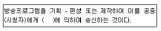
- 정보통신설비
- 방송통신설비
- 이동통신설비
- 전기통신설비
(정답률: 68%)
98. 일정 크기를 갖는 정보전달 단위인 셀(cell)을 기본으로 하여 비동기식으로 보내는 방식은?
- STM
- FSK
- ATM
- PSK
(정답률: 73%)
99. 아날로그 지상파 텔레비전방송국의 경우 색신호 부반송파의 주파수 허용편차는?
- ±3[Hz] 이내
- ±5[Hz] 이내
- ±10[Hz] 이내
- ±15[Hz] 이내
(정답률: 76%)
100. 방송통신위원회가 무선국 개설 허가 심사시 항목이 아닌 것은?
- 주파수지정이 가능한지의 여부
- 무선국운영자의 채무 상태 여부
- 자격ㆍ정원 배치 기준에 적합한지의 여부
- 기술기준에 적합한지의 여부
(정답률: 89%)